Minimal Network Test Cases
This document outlines a series of example scenarios illustrated with a minimal network consisting of the following graph:

A is an user A, B is user B, R is a dedicated relay, and C +R is user C who has also configured their server to act as a relay. Unless otherwise specified, this will be the graph used to explain the following scenarios.
First-time user discovery
A has just connected to the network for the first time. How do they find other users and relays on the network?